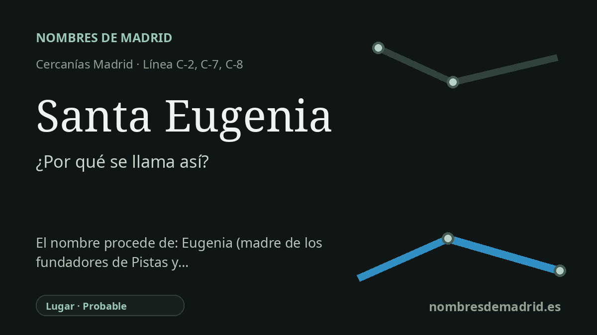

Publicado el · Investigación de Nombres de Madrid · Cómo verificamos cada origen · 10 fuentes consultadas
Respuesta rápida
La estación de Santa Eugenia toma su nombre del barrio y de la avenida de Santa Eugenia, surgidos en torno a la Ciudad Residencial Santa Eugenia de 1971. La memoria local dice que la urbanización homenajeaba a la madre de los promotores, Eugenia, mientras que la documentación municipal del callejero registra la avenida como nombre de santa.
La historia del nombre
La estación de Santa Eugenia toma su nombre, ante todo, de su entorno: el barrio de Santa Eugenia, en Villa de Vallecas, y la avenida de Santa Eugenia, donde se encuentra la parada ferroviaria. Renfe indica que la estación se abrió al público en 1989, construida a raíz del desarrollo del barrio que la rodea, y que hoy forma parte de las líneas C-2, C-7 y C-8.
El nombre anterior que explica la estación es la Ciudad Residencial Santa Eugenia. Documentación del Ayuntamiento de Madrid sitúa la creación de esta urbanización privada en 1971 junto al cerro Almodóvar, separada unos tres kilómetros del casco histórico de Vallecas. Se concibió como una gran zona residencial suburbana, con altos bloques de ladrillo, avenidas amplias, jardines y servicios para la clase media de la época.
La explicación local más llamativa es personal. Un artículo de Vallecas VA, basado en conversaciones con activistas vecinales de la Asociación de Vecinos La Colmena, afirma que los hermanos burgaleses Roberto, Carmelo y Alejandro, vinculados a la constructora Pistas y Obras y con apoyo del Banco Rural del Mediterráneo, fundaron la mancomunidad con el nombre de su madre: Eugenia. La misma fuente relaciona los numerosos nombres de pueblos burgaleses en las calles del barrio con el origen provincial de los promotores.
Hay, sin embargo, una complicación importante. Una publicación municipal madrileña sobre las mujeres en el callejero registra la avenida de Santa Eugenia como nombre de 1972 en Villa de Vallecas y explica Santa Eugenia por las santas cristianas que llevaron ese nombre, no por la madre de los promotores. Eso no desmiente necesariamente la memoria local: el prefijo religioso 'Santa' pudo facilitar que un homenaje familiar funcionara como topónimo urbano, y la documentación posterior del callejero pudo normalizarlo como nombre de santa.
Para un explicación pública, la formulación más sólida debe ser prudente. La estación se llama con seguridad por el barrio y la avenida de Santa Eugenia; la ciudad residencial y la presencia de Pistas y Obras están bien documentadas; la historia de la madre de los promotores es plausible y muy específica, pero aún no está confirmada por un documento fundacional primario. Una escritura citada en el BOE y noticias contemporáneas de El País muestran a Pistas y Obras actuando en la Ciudad Residencial Santa Eugenia en los años setenta, reforzando la cronología aunque no resuelvan la dedicatoria última.